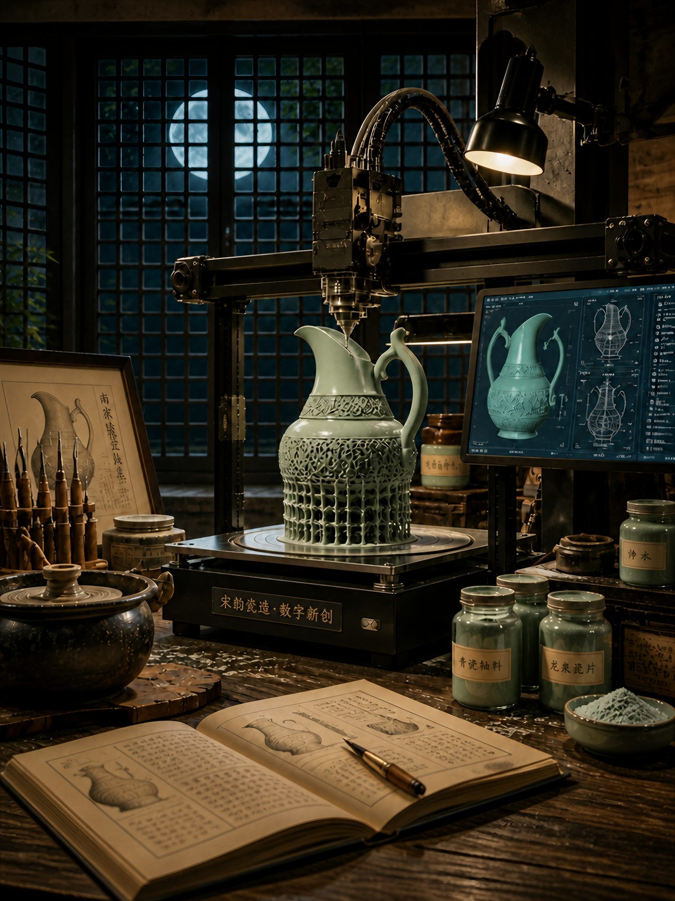
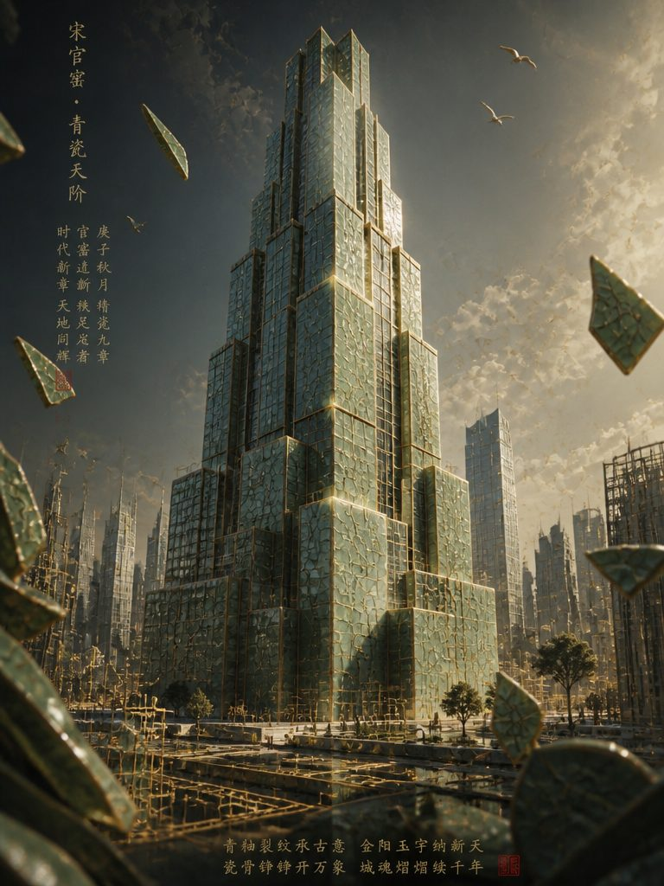
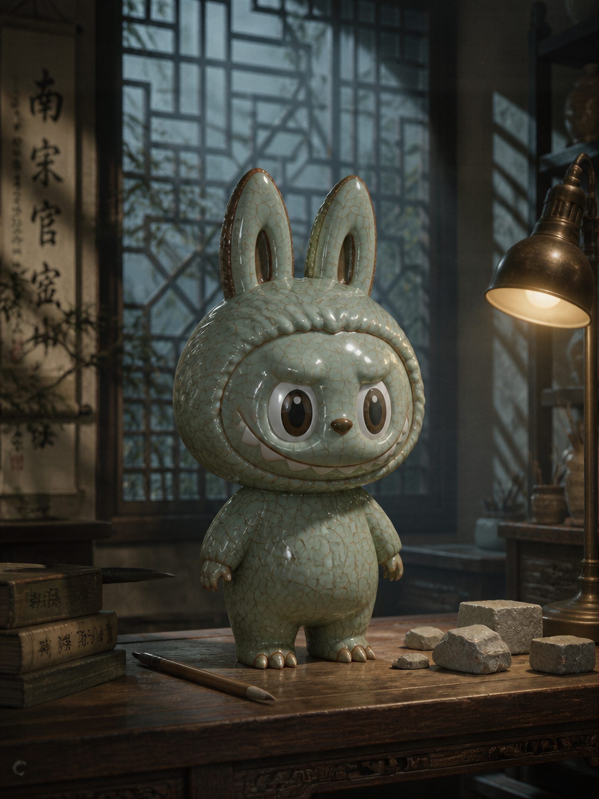

青瓷重构
AIGC插画
CELADON REIMAGINATION
以青瓷器物为对象，重新组织其釉色、裂纹、器形与纹样，形成具有当代感的视觉表达。

设计说明
本系列以南宋官窑青瓷为文化母题，从建筑、数字造物、潮玩、营造四个维度，对器形、釉色与开片纹理进行当代转译。
意在表明：官窑之美不止于展柜，它可生长为城市立面、数字造物与潮玩形象，在新技术中完成第二次窑变。




AIGC插画
CELADON REIMAGINATION
以青瓷器物为对象，重新组织其釉色、裂纹、器形与纹样，形成具有当代感的视觉表达。

本系列以南宋官窑青瓷为文化母题，从建筑、数字造物、潮玩、营造四个维度，对器形、釉色与开片纹理进行当代转译。
意在表明：官窑之美不止于展柜，它可生长为城市立面、数字造物与潮玩形象，在新技术中完成第二次窑变。

